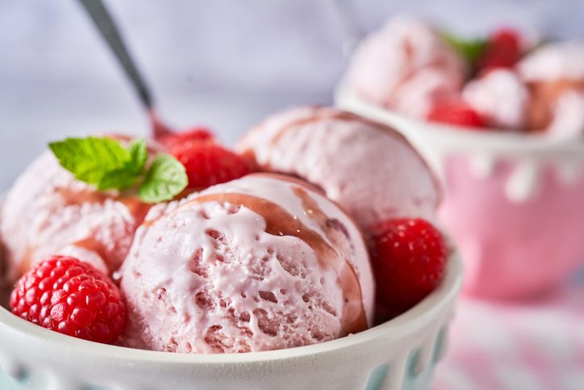

Receitas
ETC

Sorvete de whey sabor morango
Criado por:
Growth
Criado em 09/05/2024
Um sorvete bem saudável feito para refrescar em um dia tão quente como esse. Para você que tem preocupação com a sua saúde,
este sorvete é perfeito para você.
Ingredientes
- 500g de morango(congelado)
- 2 scoops de Whey Protein(sabor morango ou baunilha)
- 2 potes de iorgute desnatado(340g)
Modo de preparo
- Misture todos os ingredientes e bata a mistura em um liquidificador ou processador até obter um creme homogêneo e
consistente.
- Despeje a mistura em um recipiente próprio para freezer e leve para gelar por aproximadamente três horas.
- Coloque as porções em taças.